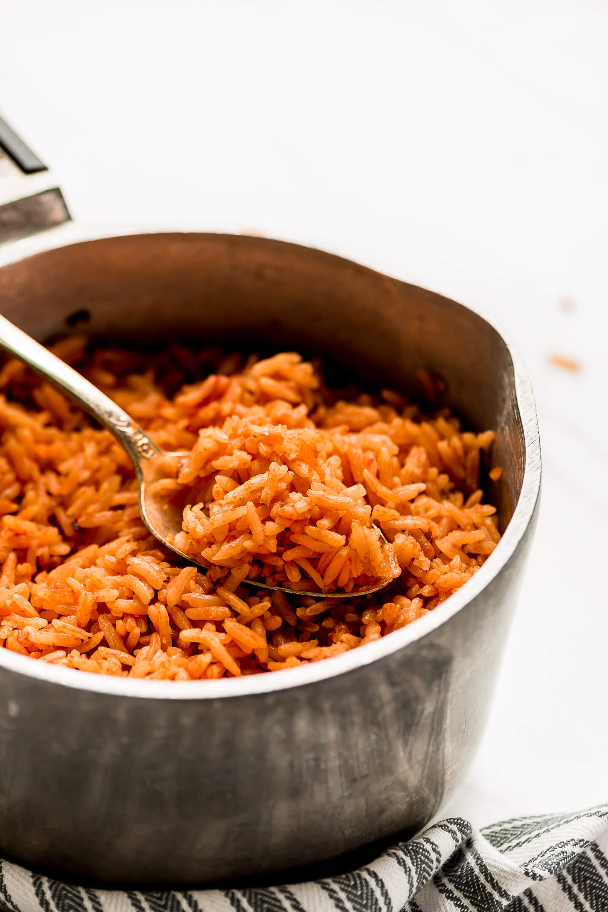

Spanish Rice

Description
Spanish rice is a easy and tasty dish that will be able to compliment most other main dishes!
Because this recipe doesn't call for many ingredients, you will be able to master this dish without much effort and add it onto your personal recipe book!
Spanish goes well with burritos, tacos, beans, pork, and more!
Ingredients
- Rice 2 cups
- Tomato paste 2tbsp
- Vegetable Oil 3tbsp
- Chicken bouillon 3tbsp
- Garlic and Onion seasoning
- Water 5 cups
Steps
- Add water, tomato paste, garlic and onion seasoning, and chicken bouillon to a pan.
- Put on medium heat until tomato paste is completely dissolved.
- In another pan, add rice and oil. Fry rice until brown.
- Once rice is browned, add in broth you made in other pan onto the rice.
- Bring to boil, set heat to low, cover pot and simmer for about 15-20 minutes.
- Serve and Enjoy!